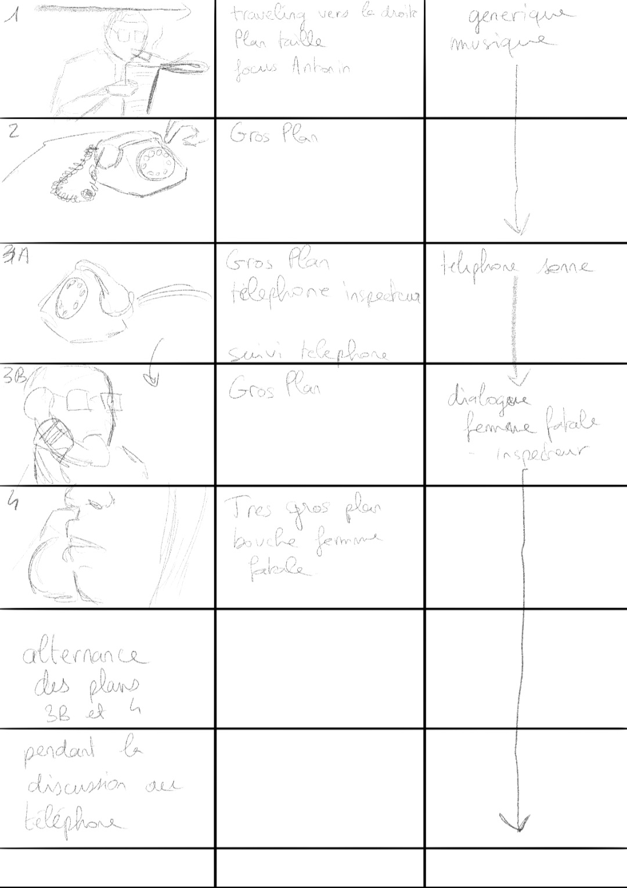
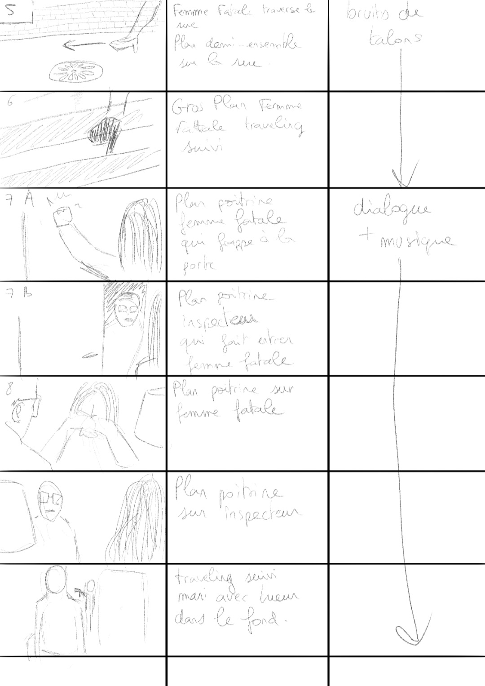

L’interview sur les étudiants d'avant et d'aujourd'hui est une vidéo regroupant des interviews. Elle a été réalisé lors de ma deuxième année de MMI en groupe de 4. Nous avons choisi le sujet de la vie étudiante, nous avons donc interviewer 4 étudiants de l’IUT et nous avons posé des questions que l’Institut International de l’Audiovisuel avait déjà posé à des étudiants dans les années 1960. Dans le but de voir la différence entre les étudiants d’avant et d’aujourd’hui comme l'indique le titre. Pour filmé nous avons utilisé deux caméras Panasonic et le montage a été réalisé sur Premiere Pro.
Le détective et le tueur est un film noir qui a été réalisé en équipe de 6 lors de ma première année de MMI. Pour ce film nous avons filmé avec une caméra Panasonic et le montage à été réalisé sur Premiere Pro. Pour la réalisation de ce film nous avons tout d'abord créé un storyboard que voici ci dessous.
 Le zombie végan est un film préventif pour la santé qui incite à manger plus sain, qui a été réalisé en équipe de 6 lors de ma première année de MMI. Pour cette vidéo nous avons choisi de le faire sur le ton de l'humour en fessant la prévention avec un format d'interview rapide style Konbini. Pour ce film nous avons filmé avec une caméra Panasonic et le montage à été réalisé sur Premiere Pro.